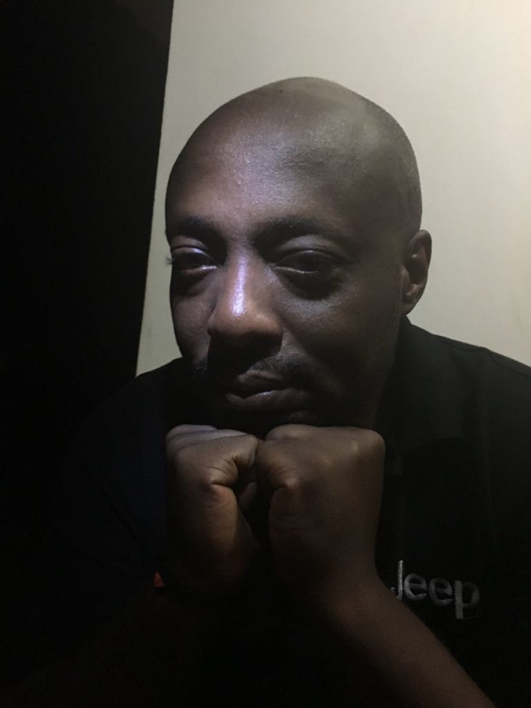

Nkusi Alex Shyaka
A tribute to a man who has dedicated his life to early childhood
introduction
of ICTs in the Ugandan education system.

Nkusi Alex Shyaka: Software Engineer and teacher
Here is the man's timeline
- 2010: Founded the TodIdea an Edutech company that teaches kids how to code and continued to open up coding clubs in schools in undeserved areas.
- 2014:Started the Silas Shyaka Foundation that educates children from War affected areas in Northern Uganda.
- 2016: Contributed to the education of school teachers about the advantages of using ICTs in class by introducing the Mwalimu tab- a tool to facilitate lessons using technology.
- 2018: Started the Edutab movement: A tablet computer for kids to learn how to read and write using technology and a tool that they use in the classrooms to learn how to code.